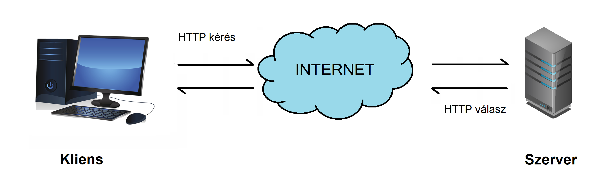
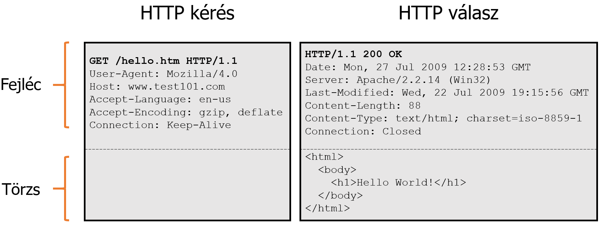
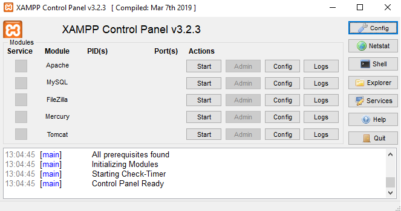
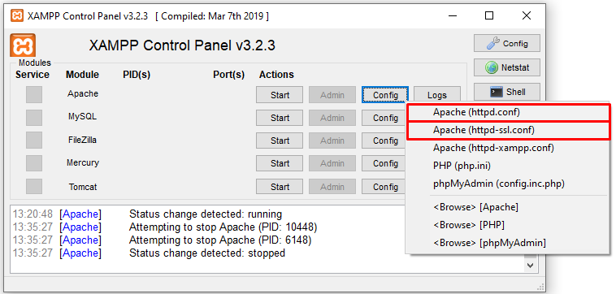
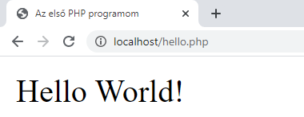
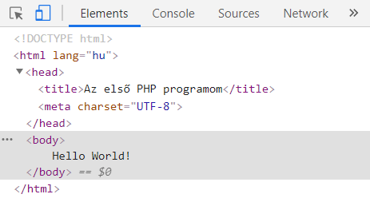
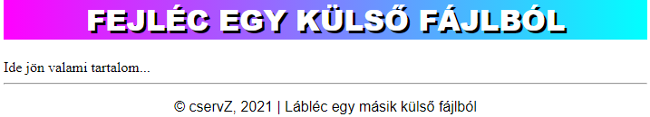

6. gyakorlat¶
A gyakorlat anyaga¶
A web működése¶
A webes programok tipikusan két részből állnak: egy kliensből és egy szerverből.
A kliens (ügyfél) általában egy böngésző, ami a gépünkön fut és adatok megjelenítéséért felel. A szerver (kiszolgáló) jellemzően egy távoli webszerver, amely kliensek kéréseit szolgálja ki.
A kliens és a szerver az Interneten keresztül kommunikál egymással a HTTP (HyperText Transfer Protocol) nevű hálózati protokoll segítségével. A kliens HTTP kéréseket küld erőforrások iránt a szervernek, amiket a szerver fogad, feldolgoz és HTTP válaszokkal reagál rájuk. Ennek a kliens-szerver modellnek a vázlatos működését szemlélteti az alábbi ábra.

URL-címek¶
A webes kommunikáció során a szerver azonosítása egy URL (Uniform Resource Locator) segítségével történik, amit a böngésző címsorában adunk meg. Az URL-címek három fontos információt tartalmaznak:
- a kommunikáció során használatos protokollt
- a szerver domain nevét (ezt a DNS protokoll átkonvertálja egy IP-címre, amely egy konkrét kiszolgálót azonosít)
- a kért erőforrás elérési útvonalát a szerveren.
Például a https://okt.sed.hu/webterv/index.html URL-cím esetén a protokoll a HTTPS, a szerver domain neve az okt.sed.hu, az erőforrás elérési útvonala pedig webterv/index.html.
HTTP¶
A hálózati kommunikációra használt HTTP üzenetek (kérések és válaszok) tulajdonképpen egyszerű szöveges üzenetek, amelyek egy TCP-csatornán keresztül jutnak el a fogadóhoz. Ezek az üzenetek két fő részből állnak: egy fejlécből és egy üzenettörzsből.
A fejléc metainformációkat tartalmaz. HTTP kérések esetén például a fejlécbe kerül a HTTP metódus, a kért erőforrás útvonala, a protokoll verziója, a böngésző típusa és még néhány egyéb információ. HTTP válaszoknál a fejléc tartalmazza többek között a státuszkódot, a szerver adatait, valamint a válasz törzsének méretét, típusát és kódolását.
A fejléc után egy üres sor következik, majd pedig az üzenettörzs, amely opcionális.
Példa: Egy HTTP kérés és egy HTTP válasz felépítése

A különböző HTTP metódusok közül leggyakrabban a GET-et és POST-ot használjuk a HTTP kérésekben. A GET kérésekkel egy erőforrást tudunk elkérni a szervertől, míg a POST kérésekkel adatot továbbíthatunk a kiszolgáló felé (pl. egy kitöltött űrlap adatait). A POST kérések esetén a szervernek továbbított adatok a HTTP üzenet törzsébe kerülnek. Ezeken kívül léteznek még további HTTP metódusok is, ezeknek a listája és leírása megtalálható itt.
Ami lényeges még számunkra, az a HTTP válaszban szereplő státuszkód. Néhány fontosabb HTTP státuszkód és jelentésük (teljes lista itt):
200 OK: sikeres kérés, az információk el lettek küldve a válaszban301 Moved Permanently: a kért erőforrás át lett mozgatva máshova a szerveren400 Bad Request: általános hibakód, a szerver nem tudja értelmezni a kérést404 Not Found: a kért erőforrás nem található a szerveren500 Internal Server Error: váratlan belső szerverhiba505 HTTP Version Not Supported: a HTTP kérés verziószáma nem támogatott a szerver által.
Megjegyzés
A webes kommunikáció során a HTTPS protokoll is használható. Ekkor a kliens és a szerver között biztonságos, titkosított kapcsolat jön létre.
Kliens- és szerveroldali webprogramozás¶
A korábbi leckékben kliensoldalon tevékenykedtünk: weboldalakat hoztunk létre és formáztunk, majd az elkészült weblapot a böngészőben nyitottuk meg. Eddig tehát főként a megjelenésen volt a hangsúly, a weboldalaink nem rendelkeztek semmilyen mögöttes üzleti logikával.
A webfejlesztés során azonban gyakran felmerül az igény arra, hogy egy weboldal működésébe programozásbeli logikát vigyünk. Például ha van egy bejelentkezési űrlapunk, akkor működést is szeretnénk hozzá társítani: le szeretnénk ellenőrizni, hogy a belépési adatok helyesek-e, és ettől függően vagy bejelentkeztetjük a felhasználót, vagy pedig valamilyen hibaüzenetet írunk ki a bejelentkezés sikertelenségéről. Az ehhez hasonló működésbeli logika megvalósítására szolgál a webprogramozás.
Attól függően, hogy az általunk írt webes programok a kliensen vagy a szerveren futnak, beszélhetünk kliensoldali (front-end), illetve szerveroldali (back-end) webprogramozásról. Ezeknek a rövid összehasonlítását tartalmazza az alábbi táblázat.
| Kliensoldali webprogramozás | Szerveroldali webprogramozás | |
|---|---|---|
| Hol futnak a kódok? | A felhasználó gépén | Egy webszerveren |
| Mire használják? | Látványelemek (pl. animációk) megvalósítása, űrlapadatok helyességének ellenőrzése (pl. e-mail cím formátuma) | Bizalmas adatok (pl. jelszavak) kezelése, adatbázis-kezelés, fájlkezelés, jogosultságkezelés |
| A programkód a weboldal forráskódjában... | ...látható | ...nem látható |
| Biztonságos az adatok tárolása? | Nem | Igen |
| Programozási nyelvek | JavaScript | PHP, Python, Node.js, ASP.NET, Java, Ruby, Perl |
A gyakorlatban a kliens- és szerveroldali programozás sokszor együtt használatos. Ennek oka, hogy bizonyos feladatokat kliensoldalon célszerű elvégezni (így nem terheljük fölöslegesen a szervert), míg néhány feladatot csak szerveroldalon lehet biztonságosan végrehajtani.
A kliensoldali programok esetén mindig tartsuk észben, hogy az általunk írt kód bárki számára látható lesz a weboldal forráskódjában! Ez nem túl szerencsés, ha bizalmas adatokkal (pl. jelszavakkal, bankszámlaszámokkal, online vizsgateszt megoldásaival) dolgozunk. Ha bizalmas adatokkal dolgozunk, használjunk szerveroldali nyelvet!
PHP - Bevezetés¶
A félév hátralévő részében a PHP (PHP: Hypertext Preprocessor) nyelvvel fogunk foglalkozni, ami a szerveroldali programozási nyelvek közé tartozik. A PHP kódot egy PHP értelmező (más néven: PHP interpreter) értelmezi szerveroldalon. Felhasználói oldalon már csak a kód kimenetét, eredményét láthatjuk.
A PHP egy régóta jelen lévő programozási nyelv, amit számos különféle célra használhatunk. Néhány főbb alkalmazási területe, a teljesség igénye nélkül:
- dinamikus HTML tartalmak generálása
- HTML űrlapok feldolgozása
- adatbázis-kezelés
- menetkövetés
- sütik küldése és fogadása
- fájlkezelés
- jogosultságkezelés
- objektumorientált programozás.
Miért pont PHP?¶
- A PHP teljes mértékben ingyenes és nyílt forráskódú (open-source).
- A PHP-t rengeteg különböző platform támogatja (Windows, Linux, Unix, Mac OS X stb.).
- A PHP szinte minden ma használt szerverrel kompatibilis (Apache, IIS, Tomcat stb.).
- A nyelv könnyen tanulható, akár kezdő programozók számára is ideális.
- A PHP hatékonyan fut szerveroldalon.
- PHP-n alapulnak olyan népszerű weboldalak, mint például a Facebook, Wikipédia, Wordpress, Tumblr és Yahoo.
Mire lesz szükségünk?¶
A PHP-ban való programozáshoz kelleni fog...
- ...egy szerkesztőprogram, amibe a kódot írjuk (pl. Gedit, Geany, Notepad++, Sublime Text, PhpStorm, Visual Studio Code stb.)
- ...egy webszerver
- ...egy PHP értelmező
- ...egy adatbázis-szerver (ezen a kurzuson az adatbázisokat nem tárgyaljuk).
A XAMPP telepítése és használata¶
A kurzus során a XAMPP nevű, ingyenesen letölthető szoftvercsomagot fogjuk használni. Ez biztosít számunkra egy Apache webszervert, egy adatbázis-szervert, valamint egy PHP futtatókörnyezetet. Használata esetén lényegében már csak egy szerkesztőprogramról kell gondoskodnunk, és már fejleszthetünk is PHP-ban.
Telepítés¶
Töltsük le és telepítsük a XAMPP-ot az otthoni számítógépünkre!
- Navigáljunk el a következő weboldalra: https://www.apachefriends.org/hu/!
- Válasszuk ki az operációs rendszerünknek megfelelő letöltési linket!
- A letöltés után telepítsük a szoftvert a telepítési utasítások követésével!
- A telepítést követően indítsuk el a programot! Ekkor valami ehhez hasonlót kell látnunk:

PHP kód írása és futtatása¶
A PHP kódjainkat tetszőleges szerkesztőprogramba írhatjuk. A forráskódot .php kiterjesztéssel mentjük el a [XAMPP telepítési helye]/xampp/htdocs mappán belül. Ez a mappa a webszerver gyökérkönyvtára: minden, ami ebben található, elérhető lesz a webszerveren keresztül.
A XAMPP-on belül az Apache felirathoz tartozó Start gombra kattintva indítsuk el a szervert! Miután a szerver elindult (az Apache felirat világoszöld háttérrel jelenik meg), a böngészőben elérhetjük a htdocs mappában található fájlokat a localhost/[fájl elérési útvonala a htdocs mappán belül] URL-címen. A localhost egyébként itt a helyi gépünket jelenti, amelyet a 127.0.0.1 IP-címmel is elérhetünk.
A leírt folyamat egy ábrán szemléltetve (a képre kattintva a kép nagyobb méretben is megtekinthető):
{kind=link}
Egy gyakori technikai probléma megoldása¶
A XAMPP telepítése után előfordulhat, hogy a webszervert nem sikerül elindítani. Ennek általában az az oka, hogy valamely másik program (pl. Skype) már használja a kommunikációhoz szükséges portokat. Ebben az esetben át kell konfigurálni a portszámokat.
Az Apache felirathoz tartozó Config gombra kattintva az első két menüpontra lesz szükségünk.

- Kattintsunk az első menüpontra, majd a megnyíló konfigurációs fájlban (
httpd.conf) keressünk rá erre:Listen 80! Ez az a portszám, amit a szerver figyel. Ezt írjuk át egy szabad portra, például81-re (ha a 81-es port sem szabad, akkor próbálkozzunk tovább82,83stb. értékekkel)! - Kattintsunk a második menüpontra, majd a megnyíló konfigurációs fájlban (
httpd-ssl.conf) keressünk rá erre:Listen 443! A portszámot itt is írjuk át, például444-re (szükség esetén próbálkozzunk tovább a445,446stb. értékekkel)!
Az első konfigurációs fájlban a HTTP, a másodikban pedig a HTTPS protokoll által használt portszámokat állítottuk be.
Ha átállítjuk a szerver által figyelt alapértelmezett portokat, akkor az URL-ben fel kell tüntetnünk az új portot a szerveren lévő fájlok elérésekor. Például ha a 81-es portra állítottuk át a HTTP által használt portot, akkor a megadandó URL-cím a localhost:81/[fájl elérési útvonala a htdocs mappán belül] lesz.
Az első PHP programunk: "Hello World!"¶
Ebben a részben elkészítjük a legelső PHP programunkat: egy olyan egyszerű programot, amely kiírja a képernyőre a "Hello World!" szöveget.
Első lépésben hozzunk létre a kedvenc szerkesztőprogramunkban egy hello.php nevű fájlt, majd mentsük el azt a xampp/htdocs mappába! A .php kiterjesztésű fájlokba nem csak PHP kódot, hanem például HTML kódot is írhatunk, ugyanis a PHP értelmező alapból egy egyszerű szövegnek tekinti a fájl tartalmát. Ezekben a fájlokban PHP utasításokat <?php és ?> között adhatunk meg (ilyen PHP blokkból akár több is szerepelhet egy PHP fájlon belül).
PHP-ban az utasítások végén pontosvessző szerepel (hasonlóképpen, mint C-ben vagy Javában). Az első PHP utasítás, amivel megismerkedünk, az echo. Ennek segítségével tudunk a képernyőre írni. Írjuk bele a korábban létrehozott PHP forrásfájlunkba a következő kódot:
1 2 3 4 5 6 7 8 9 10 11 12 | |
Mentsük el a módosításokat, indítsuk el XAMPP-ban a szervert (ha még nem tettük), majd írjuk be a böngésző címsorába a localhost/hello.php URL-t (ha korábban átírtuk a HTTP által használt portot, akkor az új portszámot tüntessük fel az URL-ben: localhost:PORTSZAM/hello.php)! Ha jól dolgoztunk, akkor a következő kimenetet látjuk:

Nézzük meg az így előállt weboldal forráskódját a böngészőben (Ctrl+Shift+I billentyűkombináció)!

Azt láthatjuk, hogy a kiadott PHP utasítások (jelen esetben az echo) nem jelennek meg a forráskódban, csupán azok kimenete. Ez különösen hasznos akkor, amikor az üzleti logikát el szeretnénk rejteni a felhasználók elől.
Külső fájlok beágyazása¶
A PHP lehetőséget biztosít külső fájlok tartalmának beágyazására. Ez különösen hasznos lehet, amikor egy weboldal több lapján is ugyanazt a PHP vagy HTML kódot szeretnénk használni.
A külső fájlok beágyazására az include és require utasításokat használjuk. Ezeknek a működése nagyon hasonló, csupán abban különböznek, hogy ha a beágyazni kívánt fájl nem található, akkor:
requirehasználata esetén végzetes hibát kapunk, és a program futása megállincludehasználata esetén figyelmeztetést kapunk, és a program fut tovább.
A többszörös (esetleg végtelen) beágyazások elkerülésére használhatók az include_once és require_once utasítások. Ezek viselkedése az include és a require működéséhez hasonló, azzal a fontos különbséggel, hogy ha már korábban beágyazták a fájlt, akkor nem ágyazzák be azt még egyszer.
Tipp
Ha sok beágyazandó fájllal van dolgunk, érdemes lehet őket egy külön könyvtárba szervezni, majd hozzáadni a könyvtárat az include path-hoz a következő utasítással: set_include_path("könyvtár elérési útvonala");.
Példa: Szúrjuk be a weboldalunkra a header.html és footer.html fájlok tartalmát!
1 2 3 4 5 6 7 8 9 10 11 12 13 14 15 | |
A kód kimenete (a fejléc és a lábléc kialakítása a külső fájlokban található):
